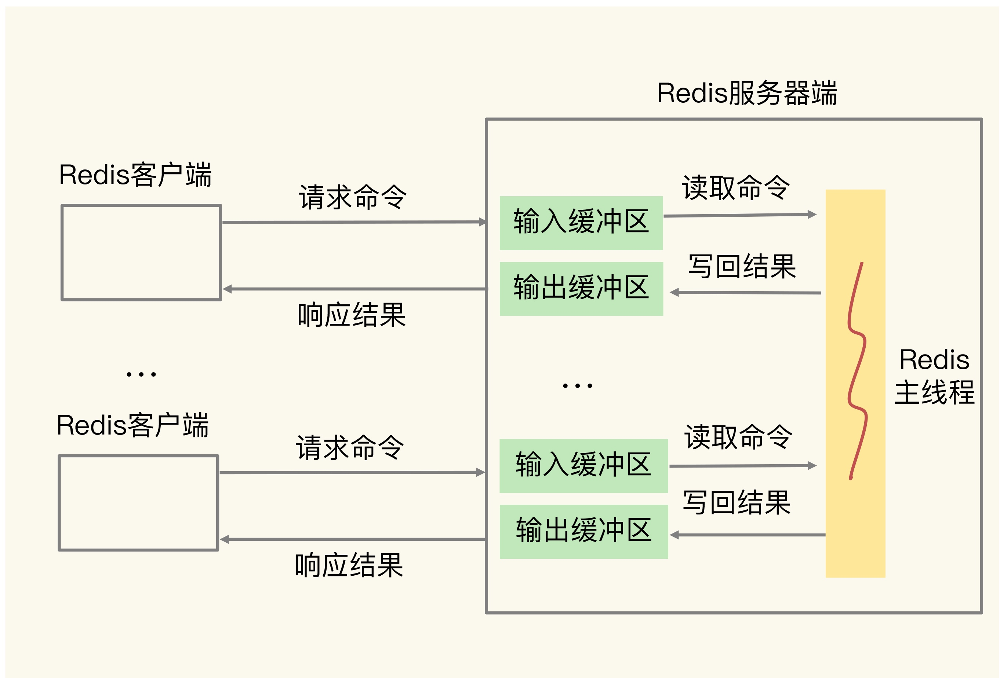
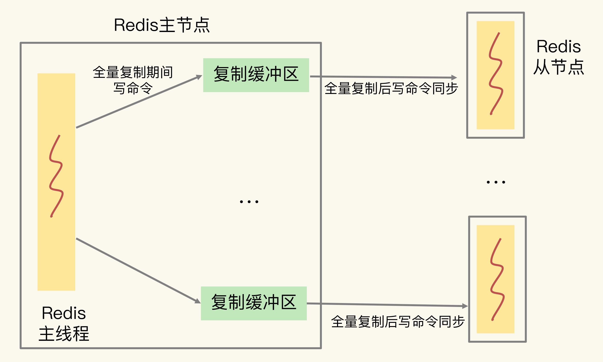
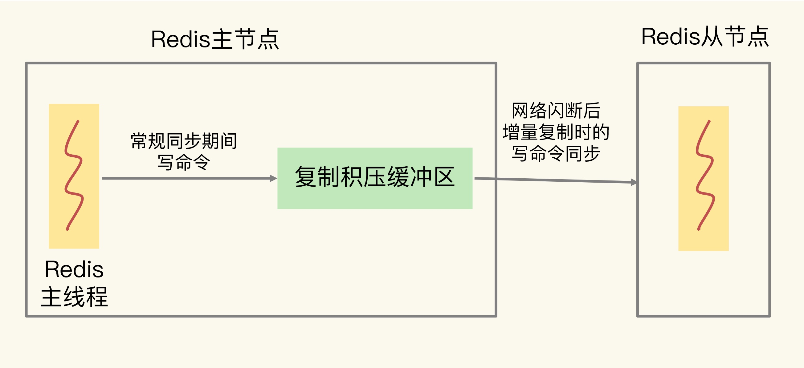

缓冲区用一块内存空间来暂时存放命令，以免出现因为数据和命令处理速度慢于发送速度而导致数据的丢失和性能问题。Redis 客户端和服务端之间进行通信，暂存客户端命令或者服务端返回给客户端的数据结果，还有一个就是主从节点之间的数据同步，用来暂存主节点接受的写命令和数据
客户端输入和输出缓冲区
服务端给每个连接的客户端都设置了一个输入缓冲区和输出缓冲区，输入缓冲区先把客户端发过来的命令暂存，Redis 主线程再从输入缓冲区读取命令进行处理。当Redis 处理完命令后，会把结果写入到输出缓冲区，在通过输出缓冲区返回给客户端。

输入缓冲区溢出
导致缓冲区溢出的原因
由于输入缓冲区是暂存客户端发送命令所以，导致的原因可能是：
- 写入bigkey， 例如：一次性写入过个百万级集合类型的数据
- 服务端处理请求速度过慢，例如：Redis 主线程出现了间歇性阻塞
如何查看缓冲区使用
查看输入缓冲区内存使用情况，可以使用CLIENT LIST 命令
CLIENT LIST
id=5 addr=127.0.0.1:50487 fd=9 name= age=4 idle=0 flags=N db=0 sub=0 psub=0 multi=-1 qbuf=26 qbuf-free=32742 obl=0 oll=0 omem=0 events=r cmd=client
其中有两类信息需要关注
- 与服务器连接的客户端信息，例如：127.0.0.1:50487
- 输入缓冲区有关
- cmd : 表示客户端最新执行的命令
- qbuf : 表示输入缓冲区已经使用的大小
- qbuf-free : 表示输入缓冲区尚未使用的大小
如何避免溢出
因为Redis服务器不止一个客户端，当多个客户端连接占用的内存总量，超过Redis的maxmemory 配置项时，就会触发淘汰，这回降低应用访问性能。如果多个客户端导致Redis 内存占用过多，导致内存溢出，Redis崩溃。
因为Redis 没有提供参数调节客户端输入缓冲区大小，所以只能通过数据命令的发送和处理速度入手。
输出缓冲区溢出
Redis的输出缓冲区包括两部分：
- 大小为16KB 的固定缓冲空间，用来暂存OK响应和出错信息
- 可以动态增加的缓冲，用来暂存大小可变的响应结果
导致输出缓冲区溢出的因素：
- 服务端返回bigkey的大量结果
- 执行了MONITOR 命令
- 缓冲区大小设置的不合理
由于bigkey 本身占用大量的内存空间，所以只看执行MONITOR 和 设置缓冲区大小
-
执行MONITOR 命令会持续占用输出缓冲区，所以建议MONITOR 在生产环境少用，甚至不用
-
设置输出缓冲区大小
- 设置缓冲区大小的上限
- 设置输出缓冲区持续写入数据的数量上限阈值，和持续写入数据的时间的上限阈值
-
设置普通客户端
client-output-buffer-limit normal 0 0 0 -
设置订阅客户端
client-output-buffer-limit pubsub 8mb 2mb 60
主从集群中的缓冲区
复制缓冲区溢出

主从同步是全量复制时，从节点接受和加载RDB较慢，同时主节点接受了大量的写命令，写命令在复制缓冲区中就会越积越多，导致溢出。
如何避免复制缓冲区溢出
-
控制主节点保存的数量的大小，通常设置在 2~4GB
-
使用client-output-buffer-limit 设置合理的复制缓冲区大小
config set client-output-buffer-limit slave 512mb 128mb 60slave 参数表明该配置项是针对复制缓冲区的。512mb 代表将缓冲区大小的上限设置为 512MB；128mb 和 60 代表的设置是，如果连续 60 秒内的写入量超过 128MB 的话，也会触发缓冲区溢出
复制积压缓冲区的溢出问题

主从在增量复制时，主节点在把接受到的写命令同步给从节点，同时把这些写命令写入复制积压缓冲区。
- 复制积压缓冲区是一个环形缓冲区
- 调整复制积压缓冲区的大小